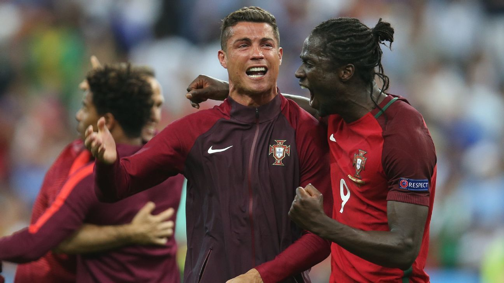

'Small Mentality' — The Iceland Rant
The match: On 14 June 2016, Portugal opened their Euro 2016 Group F campaign against tournament debutants Iceland in Saint-Étienne. Nani struck in the 31st minute, but a nation of just 330,000 hit back through Birkir Bjarnason in the 50th, and it ended 1-1. Ronaldo racked up attempt after attempt to no avail, scowling his way through the night.
The rant: In the mixed zone Ronaldo unloaded on the opposition: 'Iceland didn't try to play; they just defended with everyone behind the ball. They celebrated as if they'd won the Euros — in my opinion that shows a small mentality, and they won't achieve anything in this competition.'
Arrogance, textbook edition: Iceland was the smallest nation ever to play a Euro (pop. ~330,000 — fewer people than a rounding error of Ronaldo's social following). A debutant squad celebrating an equaliser against a world power is football's purest story; branding it 'small mentality' was read worldwide as punching down with both fists.
Iceland's answer: Co-manager Lars Lagerbäck laughed it off, and the squad stapled the quote to the dressing-room wall as fuel. Iceland drew Hungary, beat Austria with a 94th-minute winner, then knocked out England 2-1 in the last 16 — while Portugal advanced as a best-third with three draws.
Poetic justice: Every Iceland step forward resurrected 'small mentality' as 2016's most famous reverse-jinx. The team Ronaldo declared 'won't achieve anything' reached the quarter-finals — while Ronaldo himself went goalless through the entire group stage, only opening his account from the spot in the semi-final.
The pattern: From Iceland to 'teams that park the bus', from referees to teammates, Ronaldo's post-match script always features an external scapegoat. Wins prove he's 'the best in history'; draws and defeats mean the opponent 'didn't deserve it', had a 'small mentality' or 'only defended' — a rhetorical loop that has run his entire career.
The ironic ending: Portugal didn't win a single match in 90 minutes until the semi-finals, and in the final Ronaldo went off injured in the 25th minute before substitute Éder won it. The 'small mentality' Iceland left with heads high; the 'big mentality' Portugal tiptoed through on draws.